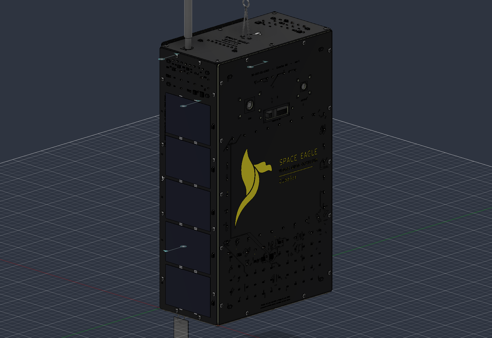
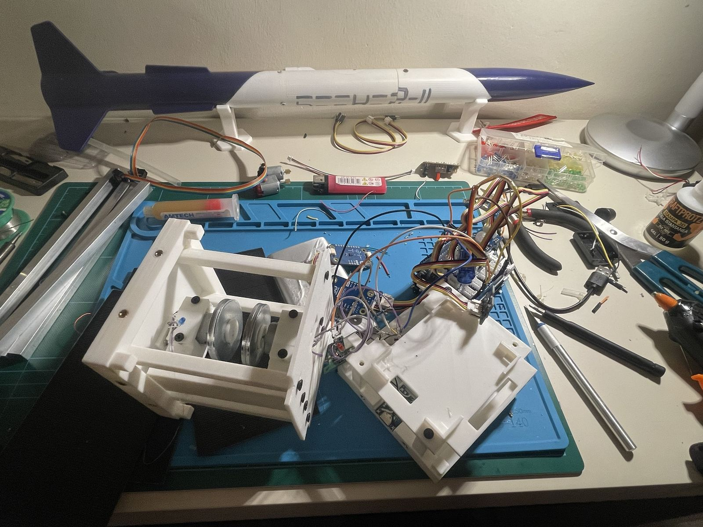

CubeSAR



A desk-sized CubeSat that makes radar images of what is around it. It uses the same principle as Sentinel-1, synthetic aperture radar: the antenna moves and the echoes are recombined in phase to rebuild the image. It is the step below IceRoute, where a mistake costs an afternoon rather than a mission.
Un CubeSat da tavolo che fa immagini radar di quello che ha intorno. Usa lo stesso principio di Sentinel-1, il radar ad apertura sintetica: l'antenna si sposta e gli echi vengono ricombinati in fase per ricostruire l'immagine. È il gradino sotto IceRoute, dove uno sbaglio costa un pomeriggio e non una missione.